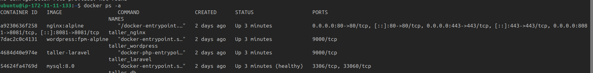
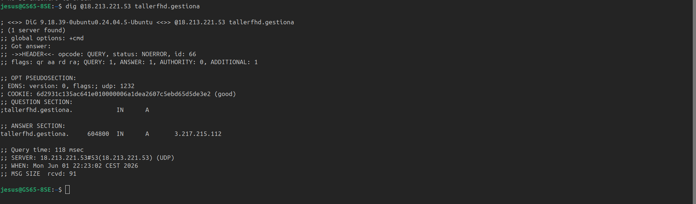
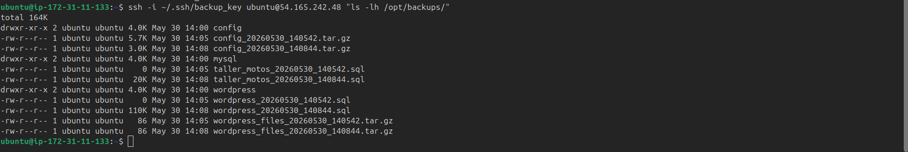
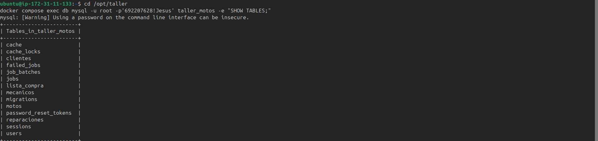
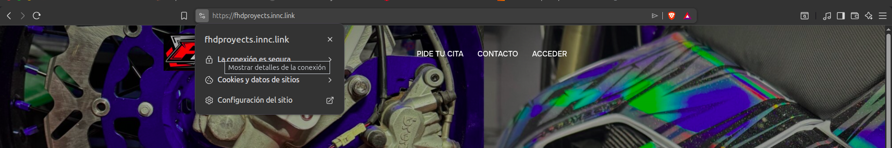
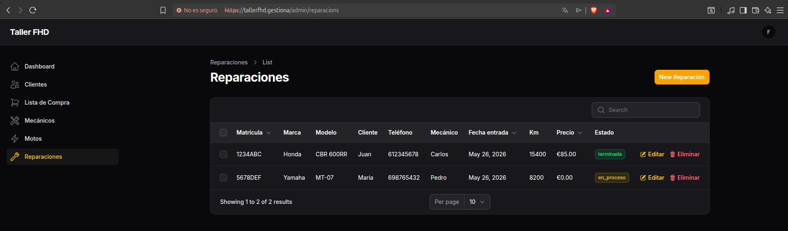

Resultados
En esta sección se recogen los resultados obtenidos tras el despliegue completo de la infraestructura, verificando el cumplimiento de los objetivos definidos en la fase de planificación.
1. Resultado general
Se ha desplegado con éxito una infraestructura completa en la nube compuesta por tres instancias EC2 independientes que dan servicio a una web pública, un panel de administración privado y un sistema de copias de seguridad automáticas. Todos los servicios funcionan con HTTPS y dominio propio, y el sistema de resolución DNS privado permite el acceso incluso en entornos con Cloudflare bloqueado.
2. Comparativa objetivos vs resultados
| Objetivo | Resultado | Estado |
|---|---|---|
| Desplegar web pública con WordPress | https://fhdproyects.innc.link operativo |
✅ |
| Panel de administración privado con Laravel/Filament | https://tallerfhd.gestiona/admin operativo |
✅ |
| Comunicaciones seguras con HTTPS | Certificados Cloudflare activos en todos los dominios | ✅ |
| Servidor DNS propio con BIND9 | Resuelve tallerfhd.gestiona y fhdproyects.innc.link |
✅ |
| Copias de seguridad automáticas nocturnas | Script cron ejecutándose cada noche a las 2:00 AM | ✅ |
| Base de datos del taller en español | 5 tablas relacionales: clientes, motos, reparaciones, mecánicos, lista de compra | ✅ |
| Aislamiento de MySQL | Puerto 3306 no expuesto, solo accesible desde red interna Docker | ✅ |
| Persistencia de datos ante reinicios | Volúmenes Docker funcionando correctamente | ✅ |
3. Evidencias del despliegue
Las pruebas se organizan por capas de infraestructura (prioridad ASIR). Las aplicaciones web se validan al final.
3.1 Servidor principal — contenedores Docker
Cuatro contenedores operativos en red interna taller_network:
| Contenedor | Imagen | Estado |
|---|---|---|
| taller_nginx | nginx:alpine | ✅ Running |
| taller_wordpress | wordpress:fpm-alpine | ✅ Running |
| taller_laravel | php:8.2-fpm-alpine (custom) | ✅ Running |
| taller_db | mysql:8.0 | ✅ Healthy |

3.2 Servidor DNS con BIND9
El DNS privado resuelve correctamente los dominios del taller, incluido tallerfhd.gestiona (solo existe en BIND9).

3.3 Sistema de copias de seguridad
Backups automáticos recibidos cada noche en el servidor independiente.

3.4 Base de datos
La base taller_motos contiene las 5 tablas con relaciones correctamente establecidas.

3.5 Aplicaciones web
Con la infraestructura validada, las aplicaciones implantadas funcionan correctamente:
Web pública WordPress — https://fhdproyects.innc.link

Panel de gestión Laravel/Filament — https://tallerfhd.gestiona/admin (solo DNS privado)

4. Métricas del sistema
| Métrica | Valor |
|---|---|
| Instancias EC2 desplegadas | 3 |
| Contenedores Docker activos | 4 |
| Volúmenes Docker persistentes | 3 |
| Bases de datos | 2 (wordpress + taller_motos) |
| Tablas en taller_motos | 5 |
| Zonas DNS configuradas | 3 |
| Puertos expuestos al exterior | 4 (22, 80, 443, 8081) |
| Backups automáticos | Diarios a las 2:00 AM |
| Protocolo de comunicación web | HTTPS (TLS 1.2/1.3) |
5. Accesos finales del sistema
| Servicio | URL | Acceso |
|---|---|---|
| Web pública WordPress | https://fhdproyects.innc.link |
Público |
| Panel WordPress | https://fhdproyects.innc.link/wp-admin |
Administrador |
| Panel Laravel/Filament | https://tallerfhd.gestiona/admin |
Solo DNS privado |
| Servidor DNS | 18.213.221.53:53 |
Consultas DNS |
| Servidor backups | 54.165.242.48 |
Solo SSH interno |